# install.packages("ggplot2")
library(ggplot2)はじめに
皆さん、ggplot、使ってますか？多分お使いですよね。
僕は数か月前ggplotのガイドブックを買いまして、いろいろと勉強しているところでございます。
こんなこともできるのか！という発見が多々あり、Rユーザーの皆様にはぜひ買っていただきたい代物なのですが、いかんせんお値段が張りますので、いくつかピックアップしてご紹介します。
書籍のリンクは以下です。
さらに、2025年9月、ggplot2がバージョン4.0.0にアップデートされました！それを記念し、4.0.0の要素も取り入れたページにアップデートしました！🎉
ぜひご参考になさってください！
ggplot2の基本
Note
使ったことがある方はこの辺はスキップしてください。
今回使うデータは、デフォルトで用意されているirisとOrangeです。
ひとまず主要なパッケージであるggplot2を読み込みます。
基本的な使い方としては、ggplot()とaes()、そして図に応じてgeom_line()（折れ線）やgeom_point()（散布図）などを使っていきます。
今回は例として、アイリスのがく片の長さ、幅をそれぞれ軸としてプロットします。
散布図
まずは基本的な散布図を描いてみます。散布図はgeom_point()を使うことで描画できます。
ggplot(iris, aes(x = Sepal.Length, y = Sepal.Width)) +
geom_point()
ggplot(data, aes())という形で使用するデータを指定aes()内ではX軸とY軸をそれぞれ指定する。- 例：
aes(x = Sepal.Length, y = Sepal.Width) - 第1引数がX、第2引数がYと決まっているので、
x =やy =は書かなくてもよいです。
- 例：
- ggplotのコマンドは
+で繋ぐ - 散布図を作るために
geom_point()を繋げる
これが土台です。ggplot()だけではプロットは表示されませんので、geom_point()など何かしら繋ぐ形にしてください。
回帰線を引きたい場合：
早速応用ではありますが、散布図を描いたら回帰線を引きたいことがありますよね。そのためには、geom_smooth()を使います。
ggplot(iris, aes(x = Sepal.Length, y = Sepal.Width)) +
geom_point() +
geom_smooth(method = lm)
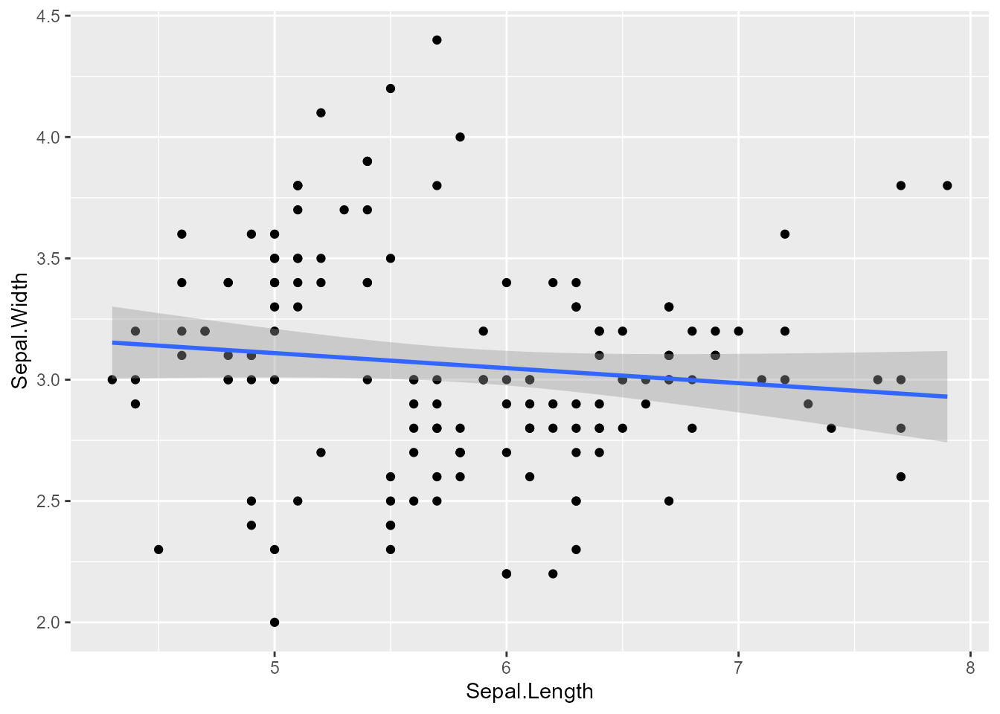
method = lmで回帰直線を引くオプションを付けることができ、デフォルトではYをXに回帰する直線が引かれます。式を変えたい場合はformula = y ~ log(x)などと式を追加してください。
また、デフォルトでは信頼区間がプロットされます。要らない場合は、se = FALSEを追加します。
また、lm以外にも、method = "loess"などもあります。?geom_smoothで確認してみてください。
ggplot(iris, aes(x = Sepal.Length, y = Sepal.Width)) +
geom_point() +
geom_smooth(method = "loess", se = FALSE)
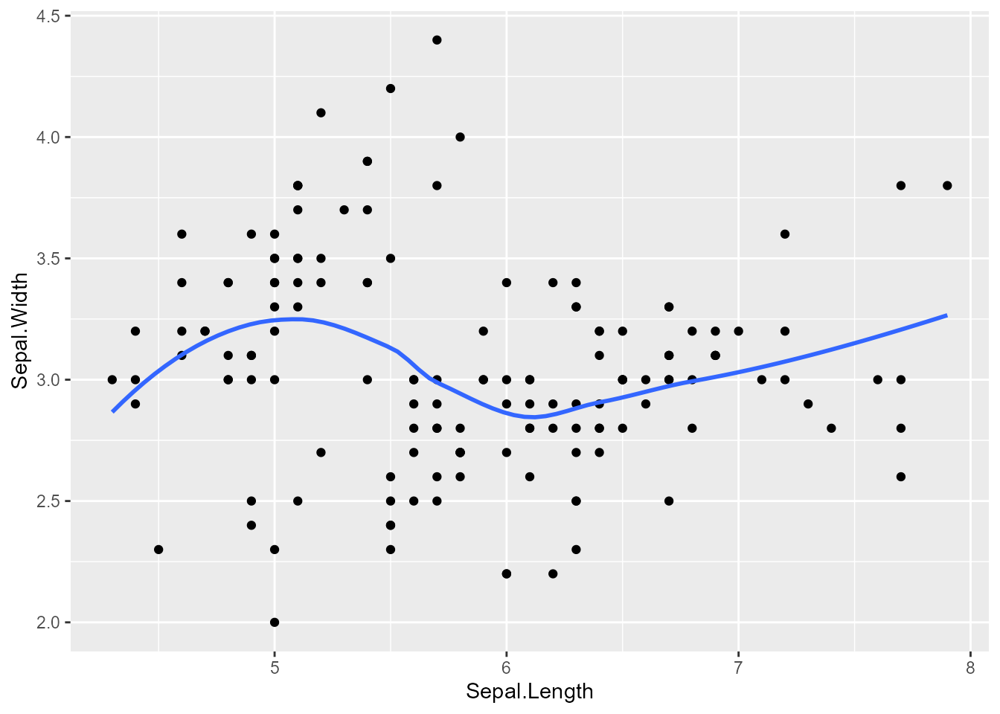
折れ線グラフ
折れ線グラフはgeom_line()を使います。
d <- tibble::tibble(
a = 1:4,
b = c(5, 3, 4, 2)
)
ggplot(d, aes(x = a, y = b)) +
geom_line()
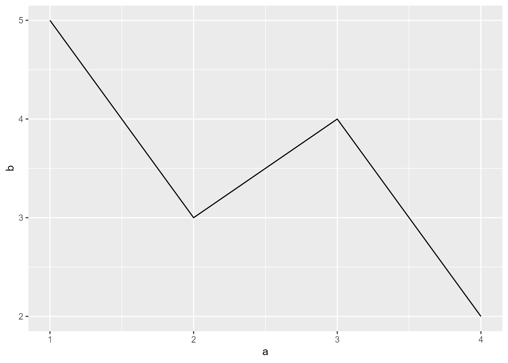
今回はdという何のひねりもないデータフレームを作成して、それを用いて折れ線グラフを作成しています。
なぜわざわざデータフレームを自分で作ったかというと、1個体についてのみ時系列をとったデータを探してくるより、作った方が早かったからです😅
というのも、折れ線グラフを作るときは、多くの場合各個体ごとに何本かの折れ線を描くことが多いと思います1。各個体ごとに折れ線を作る方法については、後のセクションでご確認ください。
ここで覚えていただきたいのはgeom_line()で折れ線グラフを作れるということです。
棒グラフ
棒グラフも汎用性が高いグラフです。棒グラフはデータフレーム内の集計をするときに役に立ちます。
まずは、irisデータセットのSpecies（種）ごとに個体数を数えた棒グラフを作成します。
ggplot(iris, aes(x = Species)) +
geom_bar()
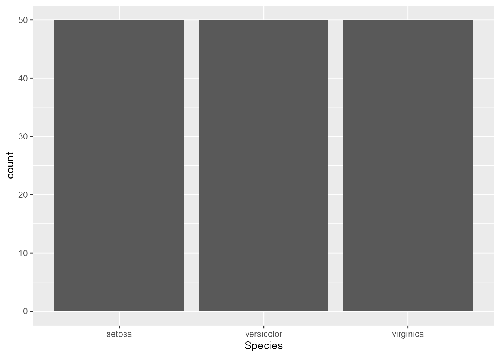
おっと…。まさかのすべて50個体ずつで、棒グラフが全部同じ高さになってしまいました。これはミスではありません！
棒グラフを書く際には、縦は自動で個体数をカウントすることになるので、aes(x = Species)とXを指定するだけで横に種類、縦にカウントをとった棒グラフが描けてしまいます。
もし横向きにしたければ、aes(y = Species)とYを指定すればOKです。
ggplot(iris, aes(y = Species)) +
geom_bar()
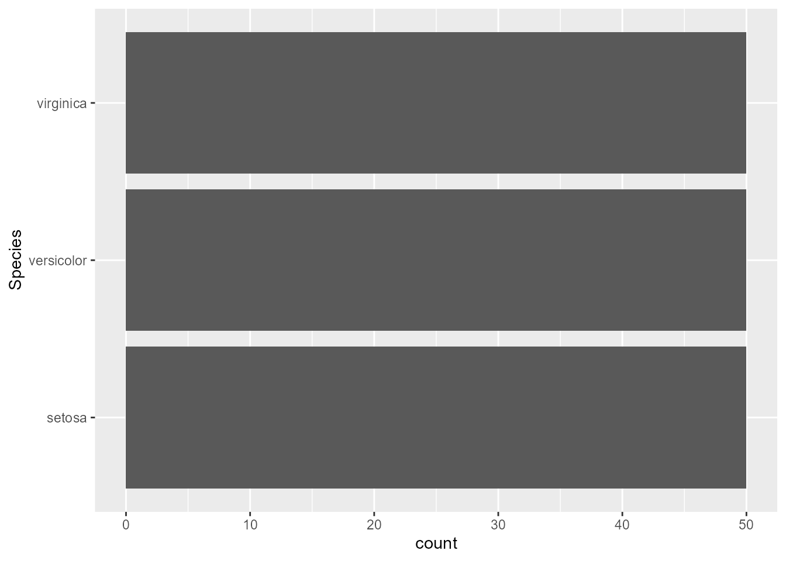
もう1種類いきましょう。irisデータセットのSpecies（種）ごとに、Sepal.Length（がく片の長さ）の平均を計算して、その平均値を棒グラフで表示します。
ggplot(iris, aes(x = Species, y = Sepal.Length)) +
geom_bar(stat = "summary", fun = "mean")
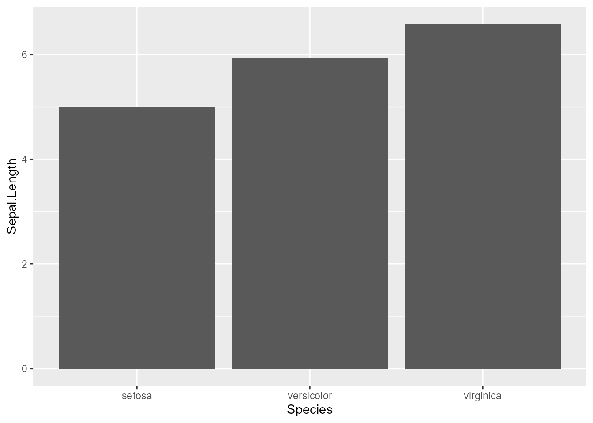
今回はgeom_bar(stat = "summary", fun = "mean")とすることで、SpeciesごとにSepal.Lengthの平均を計算して棒グラフを描いています。種類ごとに集計をするのだけど、じゃあ集計するときには平均を使ってね、ということをgeom_bar()内で指定しています。
この場合は種類ごとにがく片の長さを計算する、ということでXもYもデータフレーム内の変数を使いますのでaes(x = Species, y = Sepal.Length)とX, Y両方明示しています。
箱ひげ図
箱ひげ図は、分布を可視化するのに便利なグラフです。散布図と似ていますが、分布の要約がわかるようになっています。
ggplot(iris, aes(x = Species, y = Sepal.Length)) +
geom_boxplot()
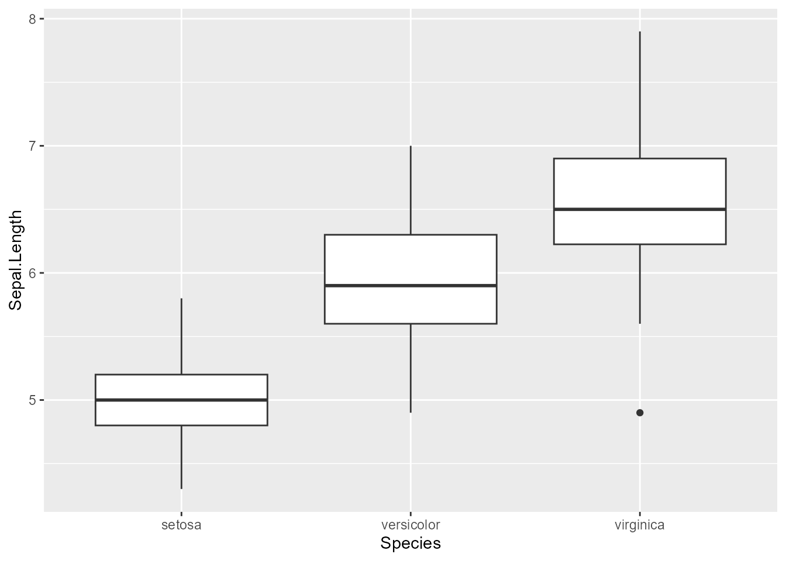
各種類において、Sepal.Length（がく片の長さ）の分布がわかります。四分位数や外れ値がわかるのが特徴です。
バイオリンプロット
バイオリンプロットは、分布を可視化するのに便利なグラフです。箱ひげ図と似ていますが、分布の形状もわかるようになっています。
ggplot(iris, aes(x = Species, y = Sepal.Length)) +
geom_violin()
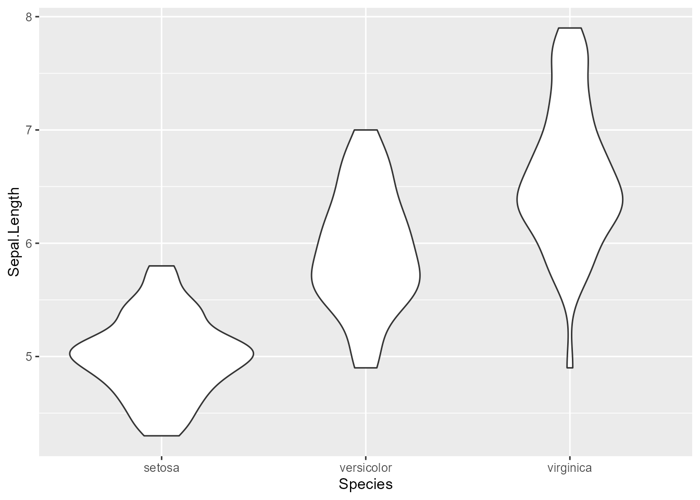
各種類において、Sepal.Length（がく片の長さ）の分布がわかります。例えば、setosaはがく片の長さが5あたりに集中していることがわかります。virginicaは全体的に長い傾向があることもわかりますね。
色を付ける
グラフに色を付ける方法について説明します。
基本的にはgeom_xxx()内でcolor = "red"のように指定すれば、色を付けることができます。
ggplot(iris, aes(x = Sepal.Length, y = Sepal.Width)) +
geom_point(color = "red")
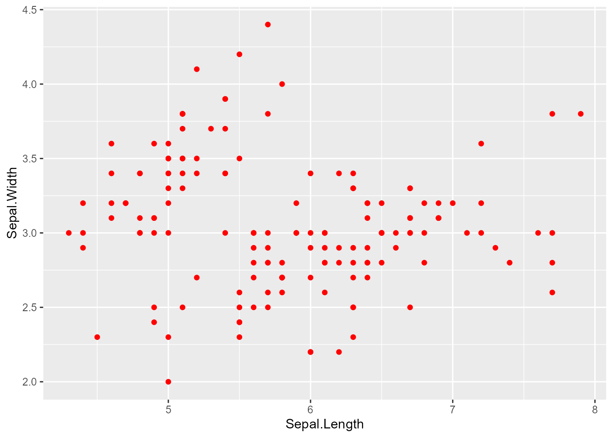
このように、geom_point(color = "red")で点を赤色にしています。
他のケースも見てみましょう。
ggplot(d, aes(x = a, y = b)) +
geom_line(color = "blue")
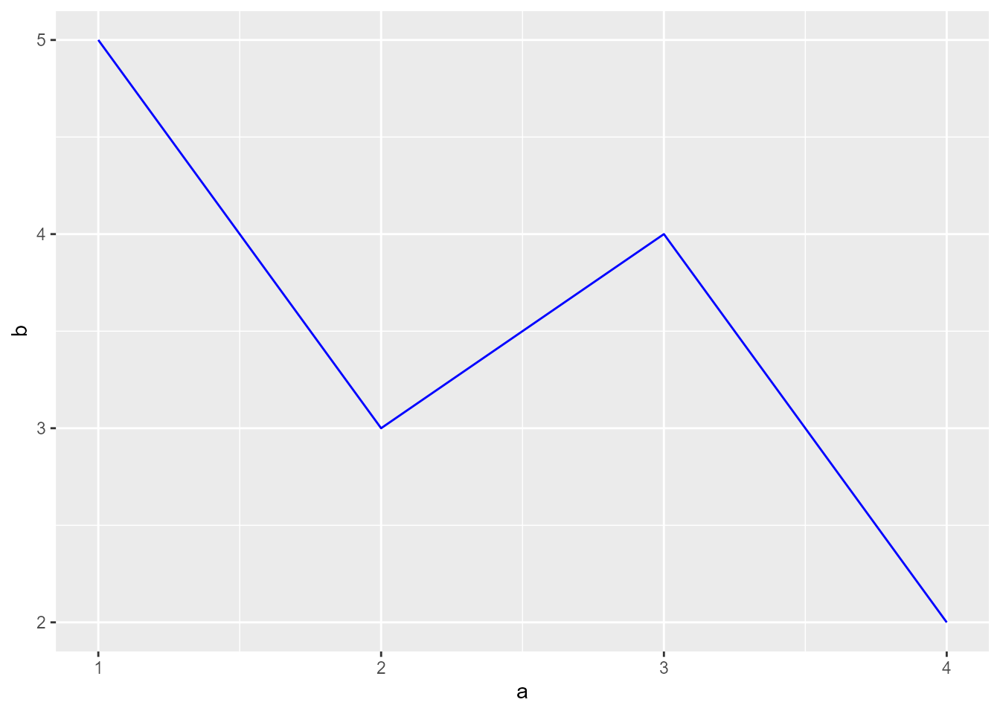
これも同様に、geom_line(color = "blue")で線を青色にしています。
棒グラフの場合は、少し事情が異なります。colorは棒の枠線の色を指定することになるので、棒自体の色を変えたい場合はfillを使います。
ggplot(iris, aes(x = Species, y = Sepal.Length)) +
geom_bar(stat = "summary", fun = "mean", color = "darkgreen")
ggplot(iris, aes(x = Species, y = Sepal.Length)) +
geom_bar(stat = "summary", fun = "mean", fill = "darkgreen")
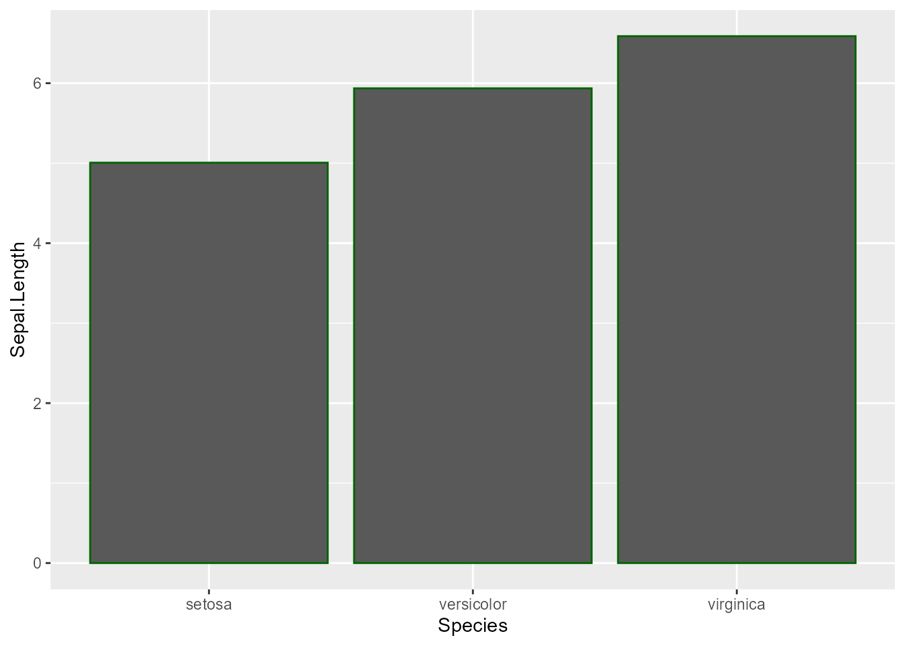
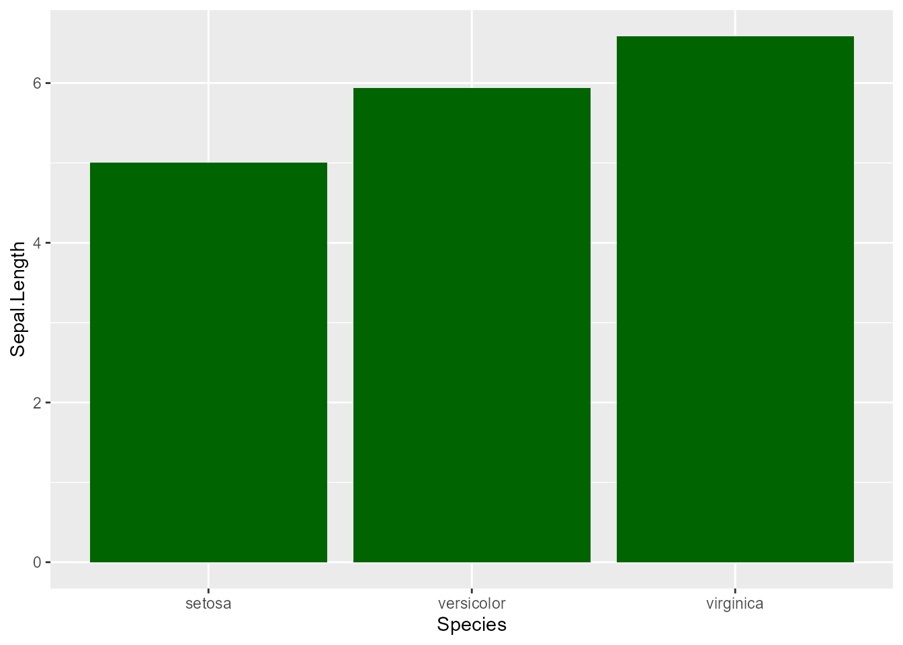
fillを使うのは棒グラフやバイオリンプロットなど、塗りつぶしがある場合です。もし枠線と塗りつぶしの両方を変えたい場合は、colorとfillの両方を指定してください。
ggplot(iris, aes(x = Species, y = Sepal.Length)) +
geom_violin(color = "darkgreen", fill = "lightgreen")
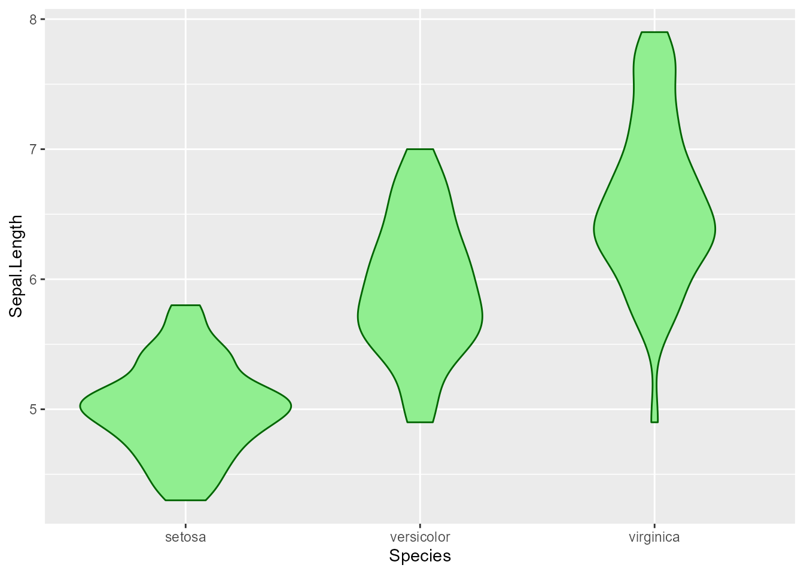
少しいじる
ここでは少しグラフをいじって、点の形を変えたり、線の種類や太さを変えたりする方法を説明します。
点の形
ggplot(iris, aes(x = Sepal.Length, y = Sepal.Width)) +
geom_point(shape = 17, color = "blue", size = 3)
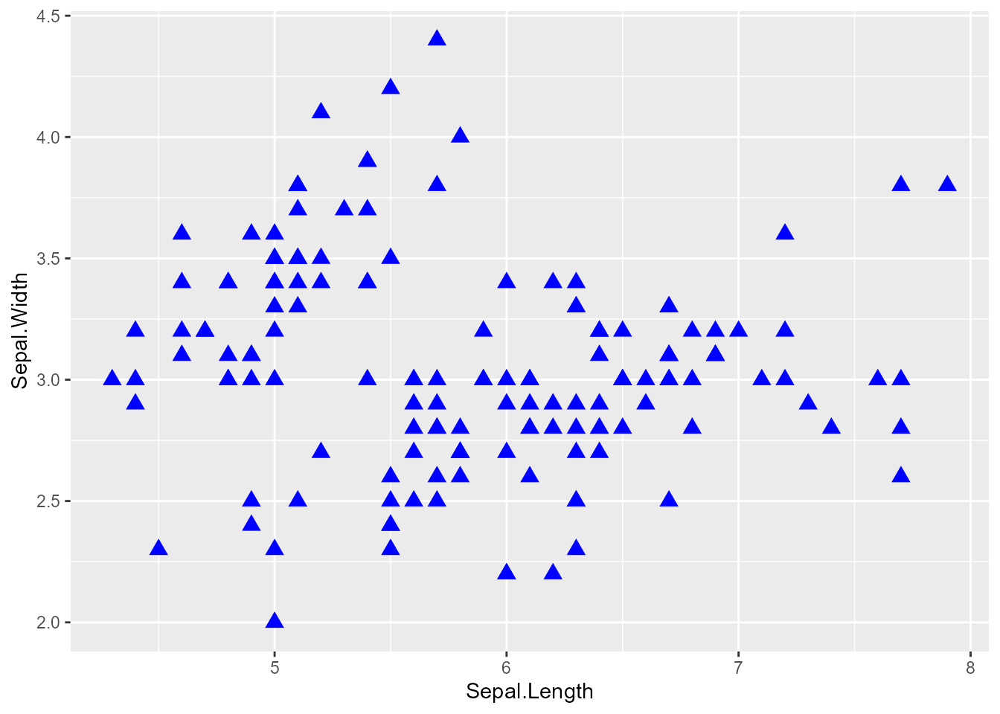
shapeで点の形を指定- 形は0から25まであります。
?pointsで確認できます。
- 形は0から25まであります。
sizeで点の大きさを指定- 数値が大きいほど大きくなります。
線の種類と太さ
ggplot(d, aes(x = a, y = b)) +
geom_line(color = "blue", linetype = 2, linewidth = 1.5)
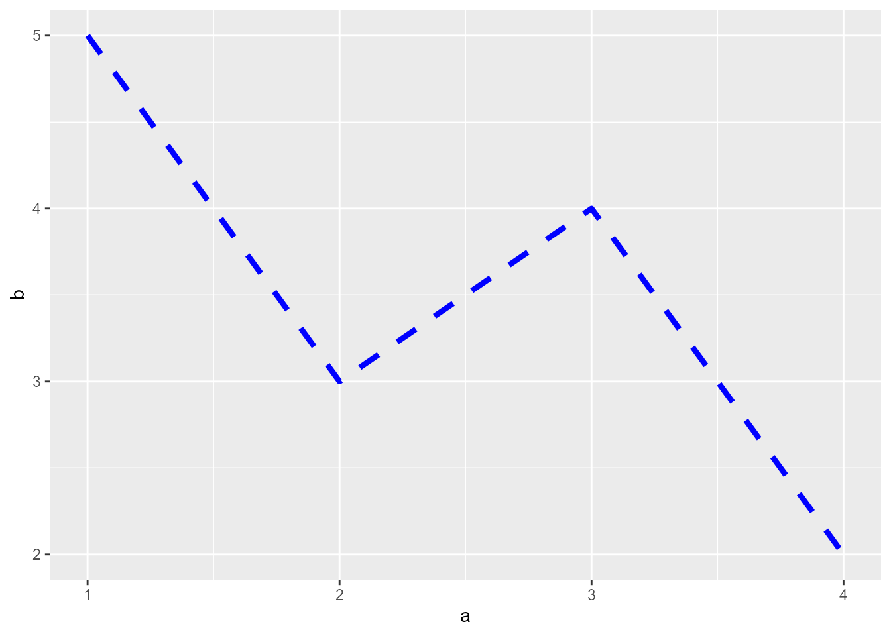
linetypeで線の種類を指定- 0から6まであります。
?linetypeで確認できます。
- 0から6まであります。
linewidthで線の太さを指定- 数値が大きいほど太くなります。
軸
基本的なグラフを紹介できたところで、次にこれらのグラフを使いながら、軸の扱いについて説明します。
軸ラベル
まずはX軸、Y軸のラベルを変更します。
ggplot(iris, aes(x = Sepal.Length, y = Sepal.Width)) +
geom_point() +
labs(x = "Length of Sepal", y = "Width of Sepal")
labs(x = "Length of Sepal", y = "Width of Sepal")でX軸とY軸のラベルを変更しています。
また、以下のコードは同じ結果を示します。
ggplot(iris, aes(x = Sepal.Length, y = Sepal.Width)) +
geom_point() +
xlab("Length of Sepal") +
ylab("Width of Sepal")すなわち、labs()はそれ一つでX軸もY軸もラベルを変更することができますが、xlab()、ylab()を使えば片方ずつでも変更できるということです。
次に、軸ラベルの体裁を変更したい場合、以下のようにします。
ggplot(iris, aes(x = Sepal.Length, y = Sepal.Width)) +
geom_point() +
labs(x = "Length of Sepal", y = "Width of Sepal") +
theme(axis.title = element_text(
family = "Times New Roman", face = "italic",
color = "red", size = 20
))
theme()内のaxis.titleで変更する- X軸Y軸のどちらかだけ変更したければ、
axis.title.xのようにします。
- X軸Y軸のどちらかだけ変更したければ、
element_text()内で具体的にフォントの体裁を指定フォントはTimes New Romanを使用しています。これはWindowsの設定であり、MacやLinuxではTimesで表示されると思います。
今回はわかりやすく派手にしましたが、これらの要素を変更すれば調整できます。
例えば、
face = "bold"にすれば太字にできます。他にもありますが、おおむね使うのはこのあたりでしょう。
軸の目盛り
ggplot(iris, aes(x = Sepal.Length, y = Sepal.Width)) +
geom_point() +
scale_x_continuous(breaks = seq(4.5, 8, .5)) +
scale_y_continuous(breaks = seq(2, 4, 1))
図 18 と比較してもらえればわかりますが、目盛りがX軸は0.5刻み、Y軸は1刻みになるよう変更しました。このように、X（Y）が連続値である場合、scale_x_continuous()（scale_y_continuous()）で変更できます。seq()は数列を作る関数で、seq(from, to, by)の順に指定します。
また、連続変数ではなくカテゴリ変数の場合は、scale_x_discrete()（scale_y_discrete()）を使います。
ggplot(iris, aes(x = Species, y = Sepal.Length)) +
geom_bar(stat = "summary", fun = "mean") +
scale_x_discrete(breaks = c("setosa", "versicolor", "virginica"),
labels = c("A", "B", "C"))
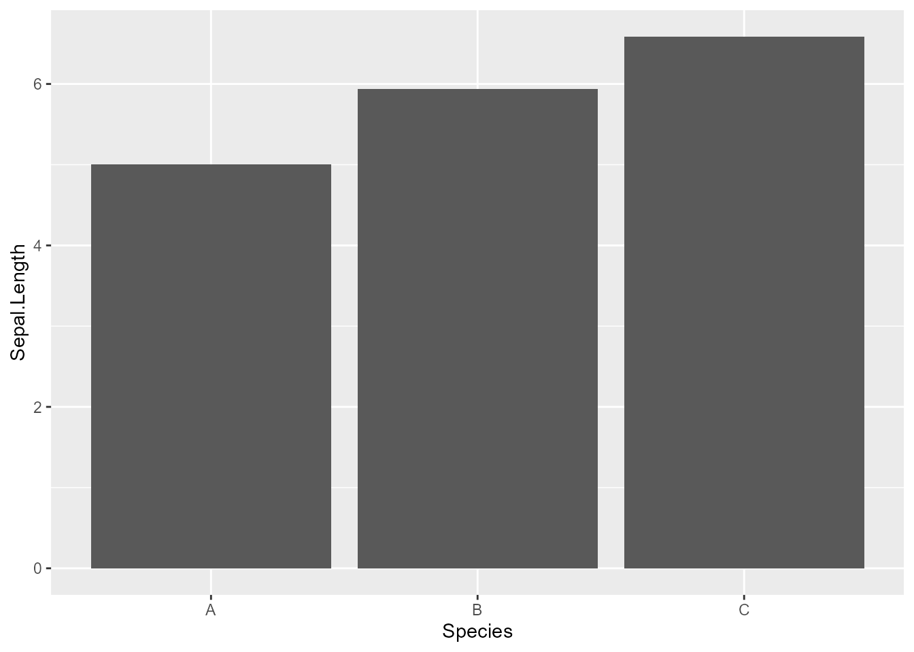
breaksで元のラベル、labelsで新しいラベルを指定します。それぞれA, B, Cに変更されました。
目盛りも同様にフォントのスタイルを変更できます。
ggplot(iris, aes(x = Sepal.Length, y = Sepal.Width)) +
geom_point() +
theme(axis.text = element_text(
family = "Times New Roman", face = "bold",
color = "red", size = 20
))
もはや訳が分からない図ですが、このように体裁は変更可能です。要素は大体上と同じで、axis.text.xのようにどちらかだけ変更することも可能です。
また、axis.ticksで目盛りを消去することも可能です。
ggplot(iris, aes(x = Sepal.Length, y = Sepal.Width)) +
geom_point() +
theme(
axis.text = element_text(family = "Times New Roman", face = "bold",
color = "red", size = 20),
axis.ticks = element_blank()
)
お判りいただけますか？軸の数字は残っていますが、目盛り線は消えています。図 21 と見比べてみてください。
軸の範囲
X軸とY軸の範囲を設定する方法です。これまでの図ではだいたい4から8あたりがXの範囲、2.0から4.5がYの範囲でした。xlim(a, b)とylim(a, b)で設定できます。
ggplot(iris, aes(x = Sepal.Length, y = Sepal.Width)) +
geom_point() +
xlim(5, 7) +
ylim(3, 4) +
theme(
axis.text = element_text(family = "Times New Roman", face = "bold",
color = "red", size = 20),
axis.ticks = element_blank()
)
注釈
グラフの中に文字や線を入れる方法について説明します。文字や線を入れるにはannotate()関数を使います。
文字
まずは文字を入れる方法です。文字はannotate()内で"text"か"segment"を指定することで挿入可能です。
ggplot(iris, aes(x = Sepal.Length, y = Sepal.Width)) +
geom_point() +
annotate("text", label = "ggplot is\nwonderful!", x = 6.5, y = 4,
family = "Times New Roman", color = "#CC6666", size = 10)
annotate("text", label = "hogehoge")でhogehogeと文字を入れることができるxとyの位置を指定しないと反映されない改行したい場合、
\nを入れるフォント、色、サイズも指定できる
関数一つで意外と簡単にできます。
セグメント
棒線や矢印を付けることも可能です。
ggplot(iris, aes(x = Sepal.Length, y = Sepal.Width)) +
geom_point() +
annotate("segment", x = 5, xend = 7, y = 4, yend = 2.5,
linewidth = 2, color = "#CC6666")
ggplot(iris, aes(x = Sepal.Length, y = Sepal.Width)) +
geom_point() +
annotate("segment", x = 5, xend = 7, y = 4, yend = 2.5,
linewidth = 2, color = "#CC6666",
arrow = arrow(length = unit(2, units = "cm")))
"segment"で棒線ができるxとxend、yとyendを指定する必要がある- \((x, y)\)から\((xend, yend)\)までの2点を結ぶようにできます。
linewidthで線の太さを指定可- 他の要素も文字の場合と同様に指定できますが、
sizeがlinewidthに置き換わっています。
- 他の要素も文字の場合と同様に指定できますが、
arrow = arrow(length = unit(x, units = "cm"))で矢じりが付くxで矢じりのサイズ、unitsは単位で、他にmmやinchesなどがあります。- ややこしいですが、
xendとyendの方に向かって矢印が付きます。
以上のように、文字だけでなく線や矢印を追加することができます。
今回はわかりやすくでかでかと描きましたが、例えばグラフ内の特徴的な部分に注釈をつけたい場合などに役立ちます。
複数のプロットと凡例
複数のカテゴリのプロット
ここではOrangeデータセットを使って複数のカテゴリのプロットと、凡例について説明します。
複数のカテゴリのプロットとは、以下のデータを見ていただけると早いと思います。
| Tree | age | circumference |
|---|---|---|
| 1 | 118 | 30 |
| 1 | 484 | 58 |
| 1 | 664 | 87 |
| 1 | 1004 | 115 |
| 1 | 1231 | 120 |
| 1 | 1372 | 142 |
| 1 | 1582 | 145 |
| 2 | 118 | 33 |
| 2 | 484 | 69 |
| 2 | 664 | 111 |
Treeは木の識別子で、1～5まであります。ageは日齢、circumferenceは幹の周囲です。
ここでやりたいことは、木の種類ごとに、日齢と幹の周囲を軸にとってプロットすることです。これをただプロットしてしまうと、
ggplot(Orange, aes(x = age, y = circumference)) +
geom_point()
これでは各点がどの木のものなのか判別できない状態です。
これを識別するために、色を付けたいとしましょう。
ggplot(Orange, aes(x = age, y = circumference, color = Tree)) +
geom_point()
前のセクションではgeom_point(color = "red")のように線全体に対して同じ色を付けましたが、今回の方法では、色を付けることを前提として、aes()内のcolor =で指定した種類ごとに色が付くという設定です。
これでとりあえずはどの点がどの木のものかわかるようになりました。
今は散布図なので色を分けるだけで済みますが、折れ線グラフのような場合は、色だけでなく線の種類を変えたいかもしれません。そんな時は次のようにします。
ggplot(Orange, aes(x = age, y = circumference, color = Tree, linetype = Tree)) +
geom_point() +
geom_line()
linetype = Treeを追加することで線の種類も木の種類ごとに変更することができました。
このようにaes()内で要素を追加することで種類ごとに分けることができます。
まだ色遣いなどは不格好ですが、いったんこのまま進めます。
凡例の位置
次にしたいのは、凡例の設定です。凡例は現在右側に表示されていますが、まずはこれを下に表示したいとします。
これは、theme()内のlegend.positionで設定できます。
ggplot(Orange, aes(x = age, y = circumference, color = Tree)) +
geom_point() +
theme(legend.position = "bottom")
theme(legend.position = "bottom")を設定することで、凡例の位置が下になりました。もちろんbottom以外にもtop, left, right（デフォルト）などを指定することができます。
さらに凡例を消したい場合は次のようにします。
ggplot(Orange, aes(x = age, y = circumference, color = Tree)) +
geom_point() +
theme(legend.position = "none")
theme(legend.position = "none")で凡例を消すことができました。
凡例の調整
例えば、凡例のタイトルだけ消したい場合が結構あると思います。図 28 の例でいえば、Treeという文字は消したいということです。
そんな場合は、guides()を使います。
ggplot(Orange, aes(x = age, y = circumference, color = Tree)) +
geom_point() +
guides(color = guide_legend(title = NULL))
Treeというタイトルが消えました。
ここではguides(color = guide_legend(title = NULL))としていますが、aes()内で例えばlinetypeを使っている場合は、guides()内もlinetype =にする必要があります。
テーマ
ggplotではテーマを選ぶことができます。デフォルトではこれまでの図のように背景がグレーになっていますが、ほとんどの場合で背景は白にしたいですよね。
背景だけでなく、罫線等もテーマで変更することができます。
プリセットのテーマ
いくつかのテーマが準備されています。代表的なものをいくつかご紹介します。
ggplot(iris, aes(x = Sepal.Length, y = Sepal.Width)) +
geom_point() +
theme_minimal()
theme_minimal()
ggplot(iris, aes(x = Sepal.Length, y = Sepal.Width)) +
geom_point() +
theme_bw()
theme_bw()
theme_minimal()と比べて外枠が付いています。
ggplot(iris, aes(x = Sepal.Length, y = Sepal.Width)) +
geom_point() +
theme_classic()
theme_classic()
ggplot(iris, aes(x = Sepal.Length, y = Sepal.Width)) +
geom_point() +
theme_linedraw()
theme_linedraw()
ggplot(iris, aes(x = Sepal.Length, y = Sepal.Width)) +
geom_point() +
theme_light()
theme_light()
ggplot(iris, aes(x = Sepal.Length, y = Sepal.Width)) +
geom_point() +
theme_void()
theme_void()
さすがにやりすぎでは…と思うかもしれませんが、GISで地図を可視化するようなときに重宝します。
theme()関数
ここまでご紹介したものの中でtheme()を使ったものがいくつかありました。
ここでtheme()はtheme_xxx()の後に使うということに注意してください。
これは、theme_xxx()がtheme()の設定を上書きしてしまうためです。
ggplot(iris, aes(x = Sepal.Length, y = Sepal.Width)) +
geom_point() +
theme(axis.title = element_text(color = "red")) +
theme_minimal()
theme(axis.title = element_text(color = "red"))で軸ラベルを赤色に設定していますが、出力されたものは黒いラベルになっています。
順番を逆にすれば、
ggplot(iris, aes(x = Sepal.Length, y = Sepal.Width)) +
geom_point() +
theme_minimal() +
theme(axis.title = element_text(color = "red"))
このようにしっかり反映されます。
theme()はtheme_xxx()で設定できない部分を細かく調整したい場合に使います。できることはたくさんあるので全てを説明することはできませんが、例えば以下のようなことができます。
ggplot(iris, aes(x = Sepal.Length, y = Sepal.Width)) +
geom_point() +
theme_minimal() +
theme(
panel.grid = element_blank(),
legend.position = "none",
axis.title = element_text(family = "Times New Roman", size = 18),
axis.text = element_text(family = "Times New Roman", size = 14)
)
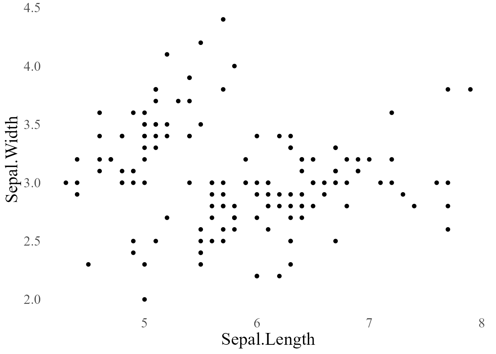
panel.grid = element_blank()で罫線を消すlegend.position = "none"で凡例を消すaxis.titleとaxis.textで軸ラベルと目盛りのフォントとサイズを変更
このように、「グラフのここを変えたいんだけどなぁ…」みたいなことはtheme()で解決できることが多かったりします。
詳しくは?themeで確認してみてください。引数名はわかりやすいので、比較的目的を見つけやすいと思います。
新しくなったtheme()の設定
paperとink
ggplot2のバージョン4.0.0からは、theme_xxx()内で色に関するデフォルト設定が追加できるようになりました。
百聞は一見に如かずということで、以下のコードをご覧ください。
ggplot(iris, aes(x = Sepal.Length, y = Sepal.Width)) +
geom_point() +
theme_minimal(paper = "papayawhip", ink = "darkgreen")
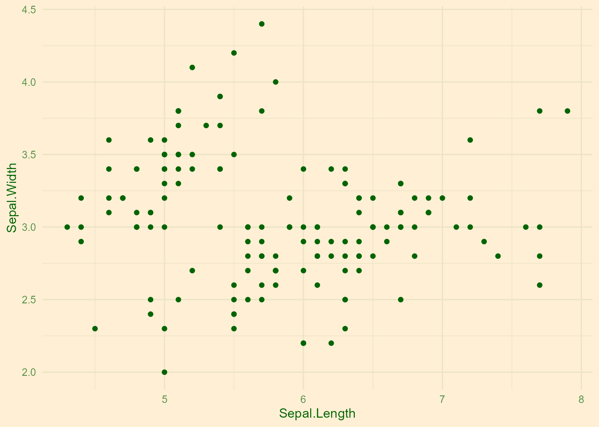
paperで背景色、inkで前景色を指定することができます。前景色は、軸ラベル、目盛り、点などに適用されます。
ここのポイントは、使用する色を統一的に指定できるということで、例えばtheme()内でaxis.titleやaxis.textの色を指定する必要がなくなります。
geom
また、theme()内でgeomを設定することで、色に関するデフォルトを設定しつつgeom_xxx()内でその設定を参照することが可能です。
ggplot(iris, aes(x = Sepal.Length, y = Sepal.Width)) +
geom_point() +
theme_minimal(paper = "papayawhip", ink = "darkgreen") +
theme(
geom = element_geom(color = "coral", pointsize = 3)
)
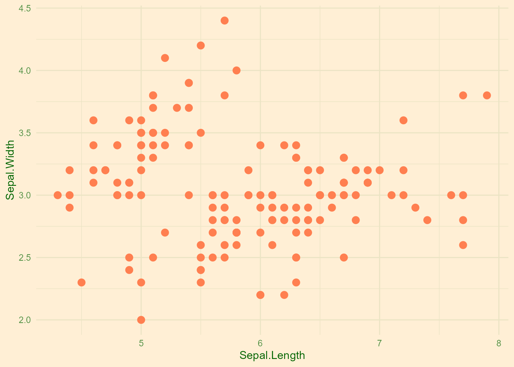
ここでは、theme(geom = element_geom(color = "coral", pointsize = 3))で点の色と大きさを指定しています。element_geom()はgeom_point()、geom_line()、geom_bar()などで共通して使われる設定を指定できます。一元管理できる点が便利ですね。
ちなみにgeomを設定しないと、点の色はinkの色、すなわちdarkgreenになります。
from_theme()
さらに、geom_xxx()内でfrom_theme()を使うことにより、theme()内で設定した色をgeom_xxx()内で参照することも可能です。
p <- ggplot(iris, aes(Sepal.Length, Sepal.Width)) +
geom_point(aes(color = from_theme(accent))) +
theme_minimal()
p + theme(geom = element_geom(accent = "blue"))
p + theme(geom = element_geom(accent = "orange"))
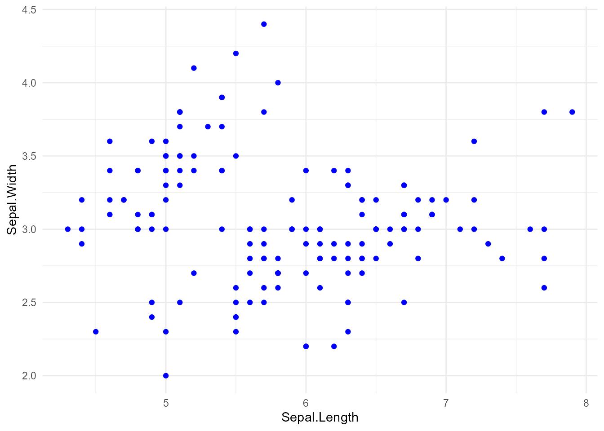
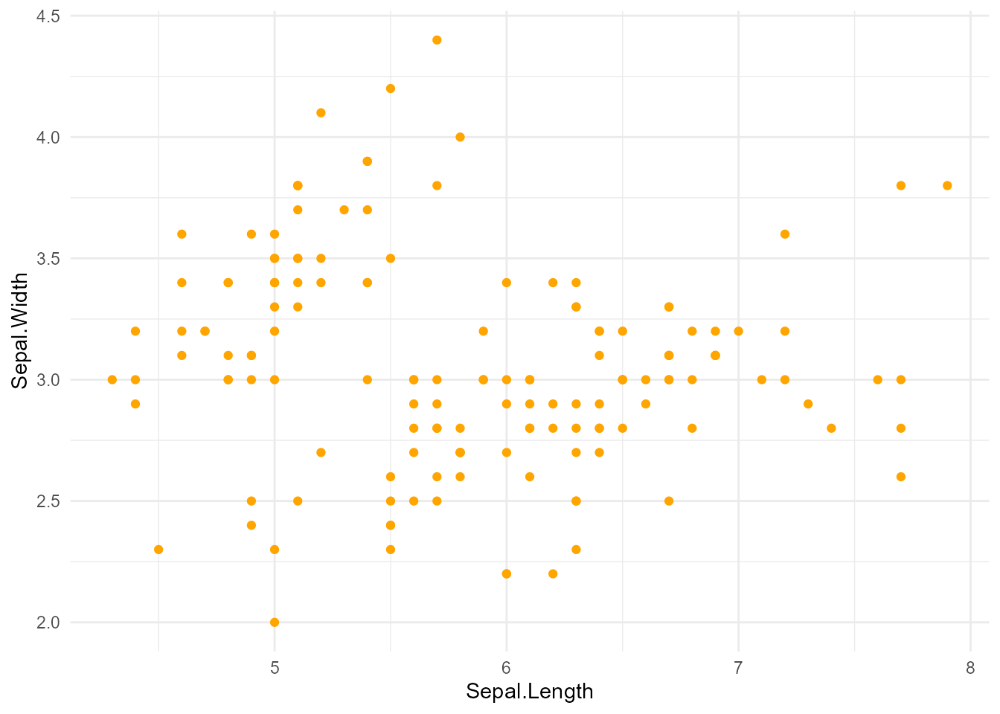
ここでは、from_theme(accent)でtheme()内で設定したaccentを参照しています。theme(geom = element_geom(accent = "blue"))のように設定することで、アクセントカラーを青に変更できます。
これはelement_geom(color = "blue")と一見同じことをしているように思えますが、たくさんのプロットを作成する場合、accentを一括で変更できる点で便利です。
使用例
- ケース：
- 論文執筆をしており、論文用とスライド用で色を変えたい
geom_point()とgeom_smooth()を使っており、geom_smooth()の色は論文用とスライド用で変えたい
- 解決策：
- テーマ側でアクセントカラーを定義
geom_line()のみfrom_theme(accent)を参照させる- こうするとプロットの本体コードは共通のまま、テーマを差し替えるだけで線の色だけ切り替わる
まず、あらかじめテーマを2つ用意しておきます。
# 論文用のテーマ
theme_paper <- theme_minimal(paper = "white", ink = "black") +
theme(geom = element_geom(accent = "navy"))
# スライド用のテーマ
theme_slide <- theme_minimal(paper = "black", ink = "white") +
theme(geom = element_geom(accent = "orange"))次に、テーマを除くプロット本体を作成します。
p <- ggplot(Orange, aes(age, circumference)) +
# 散布図は灰色で固定
geom_point(color = "gray60", size = 2) +
geom_smooth(aes(color = from_theme(accent)),
method = lm, se = FALSE, size = 1) +
labs(x = "Age (days)", y = "Circumference (mm)")この時点でpをプロットしても、折れ線の色は変わりません。まだtheme()を付けておらず、アクセントカラーが指定されていないためです。
それでは先に設定したテーマをpに適用します。
p_paper <- p + theme_paper
p_slide <- p + theme_slide
p_paper
p_slide
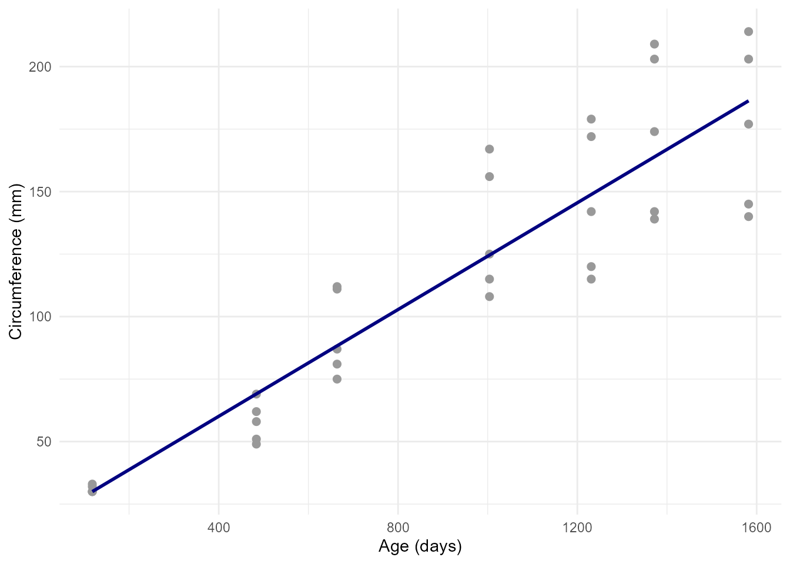
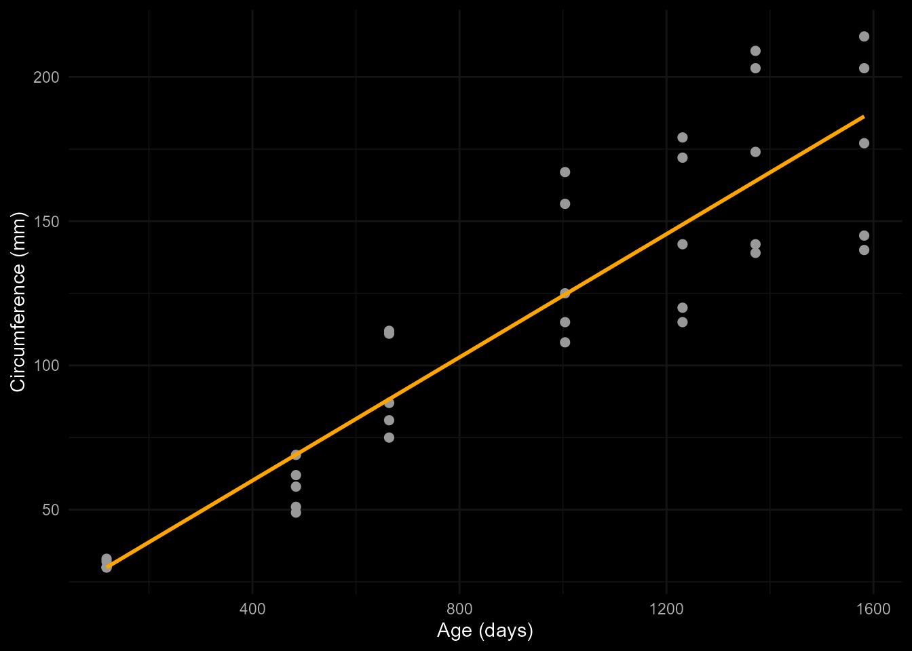
今回は1種類のスライドを論文用とスライド用に分ける想定しかしていませんが、たくさんのスライドを作る場合、アクセントカラーを一括で変えられる点で便利です。コードはそのままに、tmeme_paperとtheme_slideのaccentだけ変えればよいからです。
新しくなったラベル設定
ここまではlabs()やxlab()、ylab()で軸ラベルを設定してきましたが、あらかじめラベルを設定しておき、自動で表示させることが可能になりました。
Orangeデータセットを使って説明します。
まず、何もしない場合は以下のようになります。
ggplot(Orange, aes(x = age, y = circumference)) +
geom_point()
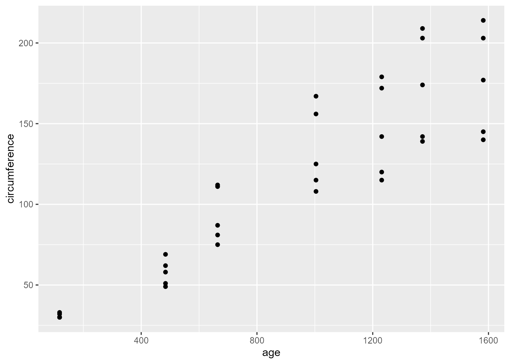
X軸はage、Y軸はcircumferenceと表示されています。
これを、あらかじめラベルを設定しておくことができるようになりました。
library(tibble)
# tibbleは属性を保持しやすい
df <- as_tibble(Orange)
# 単位: age=days, circumference=mm
attr(df$age, "label") <- "Age (days)"
attr(df$circumference, "label") <- "Trunk circumference (mm)"attr()で変数に属性を追加dfのageのlabel属性にAge (days)を追加している、という解釈です。Age (days)やTrunk circumference (mm)の部分がラベルなのでここを自由に変更できます。
これでdfを使ってプロットすると、
ggplot(df, aes(x = age, y = circumference)) +
geom_point()
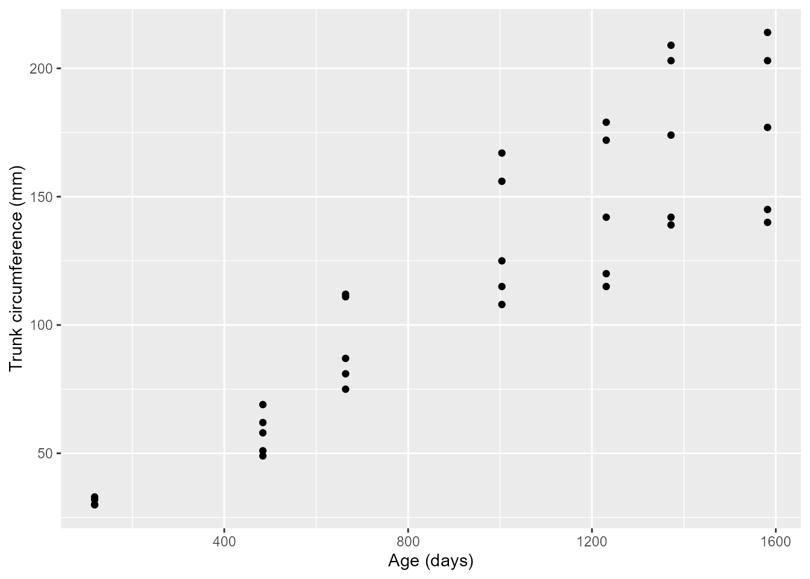
labs()を使わなくても、X軸とY軸のラベルが変更されました。
1つのグラフであればlabs()で設定した方が労力が少ないかもしれませんが、大量のグラフを作成する場合、あらかじめラベルを設定しておけば、labs()をいちいち書く必要がなくなるので便利です。
Notetibble形式について
皆さんはCSVデータを読み込むとき、何の関数を使用していますか？
多いのはbase Rのread.csv()や、tidyverseに含まれるreadrパッケージのread_csv()だと思います。
read.csv()はdata.frame形式、read_csv()はtibble形式でデータを読み込みます。tibbleはdata.frameを改良したデータ構造で、tidyverseの多くのパッケージで標準的に使われており、以下のような特徴があります。
- 見やすい表示 すべての行を出さず、必要に応じて端だけを表示するので、データの中身を把握しやすいです。
- 型情報を保持 各列のデータ型（数値・文字列など）が一緒に表示され、解析時に便利です。
- 属性を保持 labelのような属性が処理中に消えにくく、ラベル管理や可視化との相性が良いです。
tibbleはdata.frameとほぼ同じように使えるので、tidyverseを使う場合はtibble形式でデータを扱うことをおすすめします。困ったらtibble::as_tibble()で変換できます。
カラーパレット
ggplot2では、連続値やカテゴリ値を色で表現する際に「カラーパレット」を使います。
例えばscale_colour_brewer()やscale_fill_viridis_c()を指定すると、データの値に応じて自動的に一貫した配色が割り当てられます。
パレットを選ぶことで、見やすさや配色の意味（アクセシビリティ対応や論文用の白黒印刷など）を調整でき、グラフの理解度や印象に大きく影響します。
連続値のカラースケール
まずは例を見てみましょう。
ggplot(iris, aes(x = Sepal.Length, y = Sepal.Width,
colour = Petal.Length)) +
geom_point(size = 2) +
scale_colour_continuous() +
labs(colour = "Petal length")
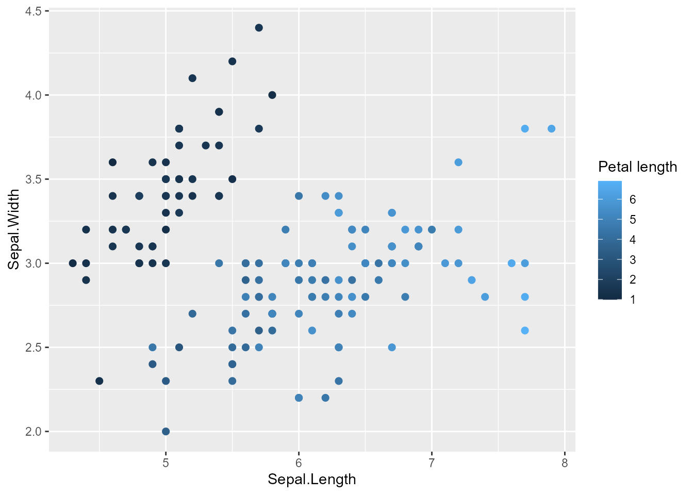
scale_colour_continuous()は連続変数を色で表すためのカラースケールで、デフォルトの配色が使われ、数値の大小をなめらかなグラデーションで示しています。
自分で色を指定することも可能です。
ggplot(iris, aes(Sepal.Length, Sepal.Width, colour = Petal.Length)) +
geom_point(size = 2) +
scale_colour_continuous(low = "blue", high = "red") +
labs(colour = "Petal length")
ggplot(iris, aes(Sepal.Length, Sepal.Width, colour = Petal.Length)) +
geom_point(size = 2) +
scale_colour_continuous(palette = c("#FEE0D2", "#FC9272", "#DE2D26")) +
labs(colour = "Petal length")
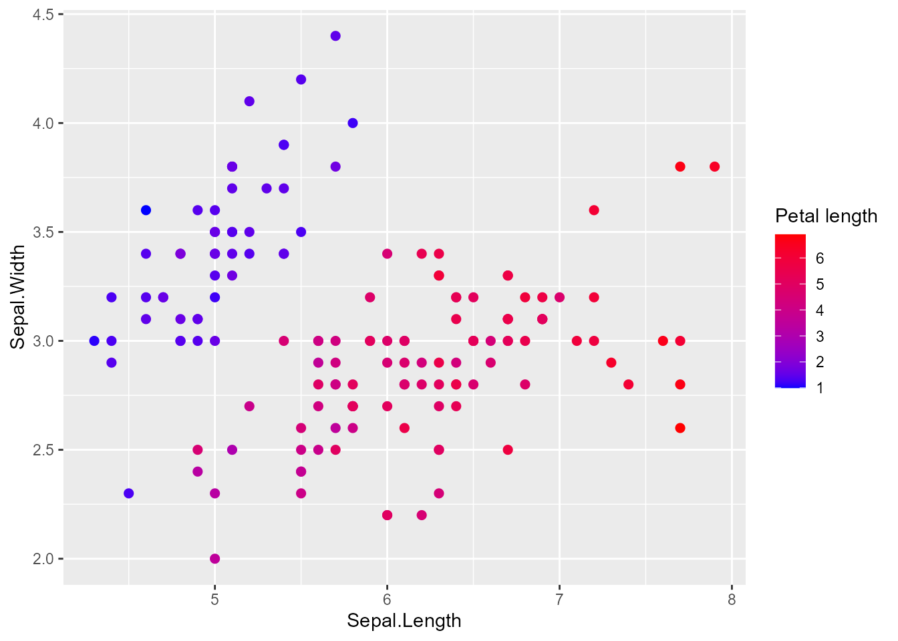
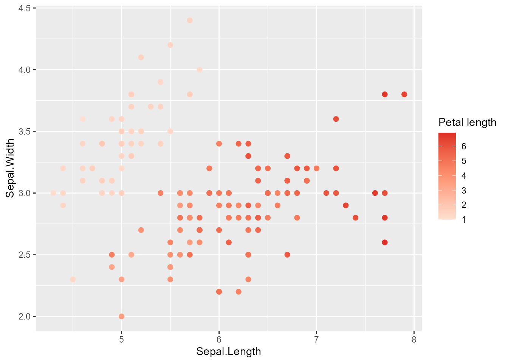
lowからhighまでの2色を指定する方法や、自分で3色以上を指定する方法などがあります。
また、他の例としてscale_colour_viridis_c()を使う方法もあったりします。
ggplot(iris, aes(Sepal.Length, Sepal.Width, colour = Petal.Length)) +
geom_point(size = 2) +
scale_colour_viridis_c(option = "plasma") +
labs(colour = "Petal length")
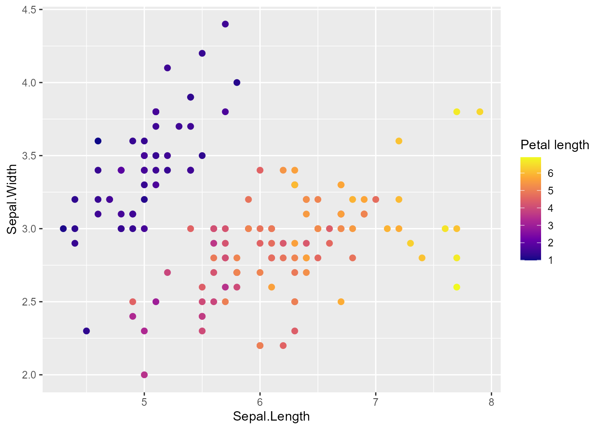
scale_colour_viridis_c()は連続変数を色で表すためのカラースケールで、視認性・色覚バリアフリー・白黒印刷対応に優れたviridisパレットを使います。plasma以外にもmagmaやinferno、cividisなどのバリエーションがあります。
カテゴリ値のカラースケール
カテゴリ変数を色で表す場合は、scale_colour_brewer()やscale_colour_viridis_d()などを使います2。
ggplot(iris, aes(Sepal.Length, Sepal.Width, colour = Species)) +
geom_point(size = 2) +
scale_colour_brewer(palette = "Set1") +
labs(colour = "Species")
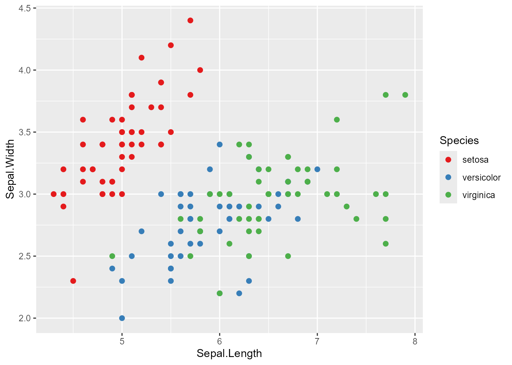
scale_colour_brewer()のpaletteにはSet1、Set2、Dark2、Pairedなどのカラーパレットがあり、用途に応じて選択できます。
また、scale_colour_discrete()を使う方法もあります。
ggplot(iris, aes(Sepal.Length, Sepal.Width, colour = Species)) +
geom_point(size = 2) +
scale_colour_discrete() +
labs(colour = "Species")
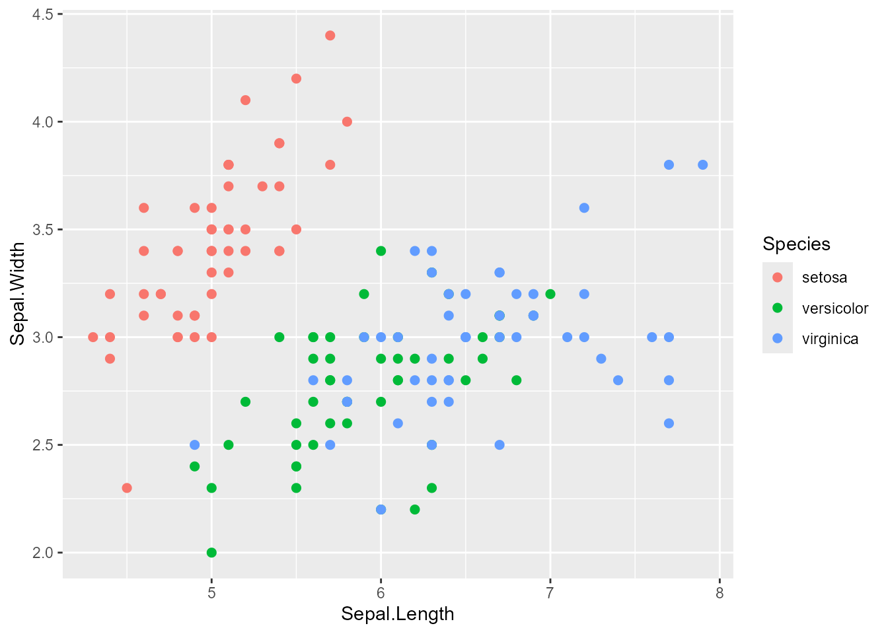
なんというか、これぞggplot2！という感じの配色ですね。もちろん色を自分で指定することも可能です。
ggplot(iris, aes(Sepal.Length, Sepal.Width, colour = Species)) +
geom_point(size = 2) +
scale_colour_manual(values = c("darkred", "darkblue", "darkgreen")) +
labs(colour = "Species")
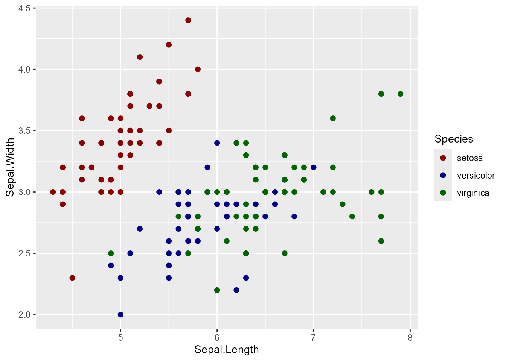
さらに、scale_colour_viridis_d()だと以下のようになります。
ggplot(iris, aes(Sepal.Length, Sepal.Width, colour = Species)) +
geom_point(size = 2) +
scale_colour_viridis_d(option = "plasma") +
labs(colour = "Species")
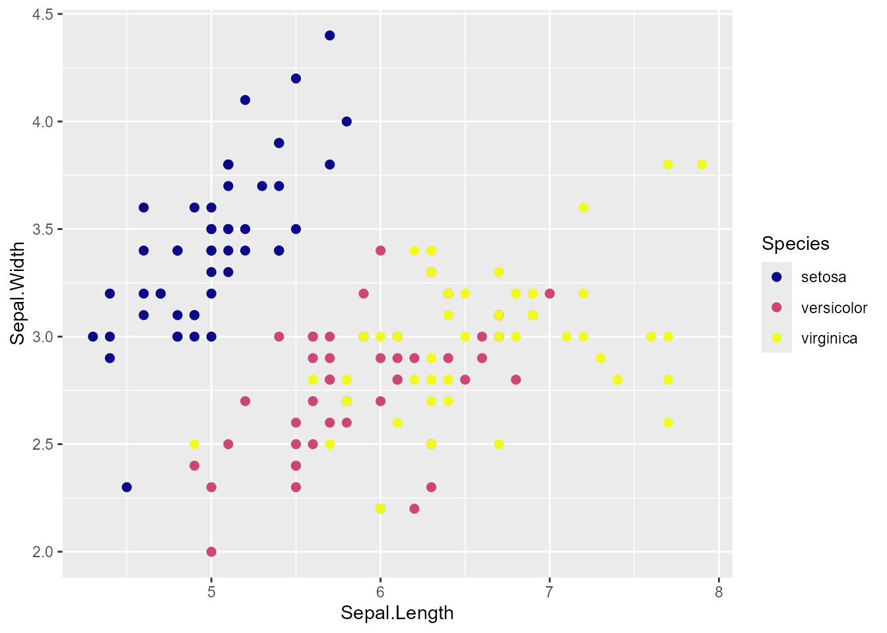
今回はSpeciesがカテゴリ変数なので、先ほどのscale_colour_viridis_c()よりもscale_colour_viridis_d()の方が適していると言えますね。
今回は代表的なカラースケールをご紹介しましたが、他にもカラーパレットはたくさんあります。今回は入門編ということでこのあたりにしておきますが、いろいろ紹介してくれているページはあるので、例えば以下のようなページを参考にしてみてください。
いろいろ含めたグラフを作ってみる
ではここで、これまでの内容を踏まえて、新しいプロットを作ってみます。データはこれもデフォルトで用意されているmpgデータセットを使います。
df <- as_tibble(diamonds)
attr(df$cut, "label") <- "Cut"
attr(df$price, "label") <- "Price (USD)"
attr(df$carat, "label") <- "Carat"
theme_use <- theme_minimal(paper = "gray98", ink = "navy") +
theme(
geom = element_geom(accent = "purple", paper = "pink",
pointsize = 2, borderwidth = 1),
axis.title = element_text(family = "Times New Roman", size = 16),
axis.text = element_text(family = "Times New Roman", size = 12),
legend.title = element_text(family = "Times New Roman"),
legend.text = element_text(family = "Times New Roman")
)
ggplot(df, aes(cut, price)) +
geom_violin(aes(color = from_theme(accent))) +
theme_minimal(paper = "gray98", ink = "navy") +
theme_use
ggplot(df, aes(carat, price, color = cut)) +
geom_point() +
annotate("text", label = "Fair < Good < Very Good < Premium < Ideal",
x = 3.4, y = 2500, family = "Times New Roman") +
scale_color_viridis_d(option = "plasma") +
guides(color = guide_legend(reverse = TRUE)) +
theme_use
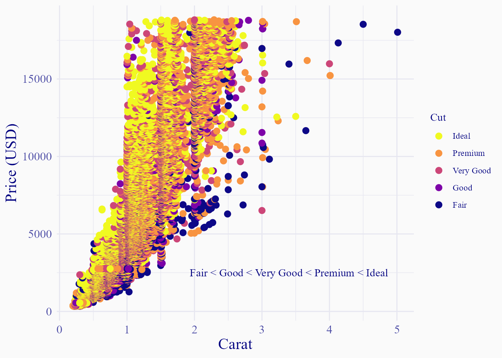
発展：ggrepel
ここからは、ggrepelというパッケージを用いて折れ線グラフを発展させた例をご紹介します。ここからはだいぶややこしいので、出来上がったグラフを見て、必要性を感じていただけたらコードを読み解いてもらえればと思います。
# インストール
# pak::pak("ggrepel")
library(ggrepel)まず、以下のようなデータがあるとします。firm_idは30まであります。
| firm_id | state_id | year | treated_1998 | is_treated | y |
|---|---|---|---|---|---|
| 1 | 50 | 1980 | 0 | 0 | 0.6546029 |
| 1 | 50 | 1981 | 0 | 0 | 1.9160271 |
| 1 | 50 | 1982 | 0 | 0 | 2.1400894 |
| 1 | 50 | 1983 | 0 | 0 | 1.8364579 |
| 1 | 50 | 1984 | 0 | 0 | 1.7661105 |
| 1 | 50 | 1985 | 0 | 0 | 1.2856041 |
これを使って横軸にYear、縦軸にyをとってグラフにします。
詳細を書くと長くなるので、適宜メモを入れました。ご参考まで。
df <- df |>
mutate(
# ハイライトする群とそれ以外に分ける
group = if_else(treated_1998 == 1, as.factor(firm_id), "other"),
# 最後の年にだけラベルを付ける
group_lab = if_else(treated_1998 == 1 & year == 2015,
paste0("Firm ", firm_id), NA_character_)
)
ggplot(
# まずハイライトする群だけプロット
df |> filter(treated_1998 == 1),
aes(x = year, y = y, group = firm_id)
) +
theme_minimal() +
theme(
# 罫線を削除
panel.grid = element_blank(),
# 凡例を削除
legend.position = "none",
# 軸のタイトルと文字のフォントとサイズを調整
axis.title = element_text(family = "Times", size = 18),
axis.text = element_text(family = "Times", size = 14)
) +
geom_vline(
# 垂直線を描写
xintercept = seq(1980, 2015, by = 5),
color = "gray91",
linewidth = .6
) +
geom_segment(
# 水平線を描写
# 描写のためにデータを準備
data = tibble(y = seq(-2.5, 5.0, by = 2.5), x1 = 1980, x2 = 2015),
aes(x = x1, xend = x2, y = y, yend = y),
inherit.aes = FALSE,
color = "gray91",
linewidth = .6
) +
geom_segment(
# 薄い水平線を描写
data = tibble(y = seq(-2.0, 4.5, by = .5), x1 = 1980, x2 = 2015),
aes(x = x1, xend = x2, y = y, yend = y),
inherit.aes = FALSE,
color = "gray97",
linewidth = .3
) +
geom_segment(
# 縦軸が0のところに水平線を描写
data = tibble(y = 0, x1 = 1980, x2 = 2015),
aes(x = x1, xend = x2, y = y),
inherit.aes = FALSE,
linetype = "dashed",
color = "gray40"
) +
geom_vline(
# 処置年に垂直線を描写
xintercept = 1998,
linetype = "dashed",
color = "gray40"
) +
geom_line(
# ハイライトしない群をプロット
data = df |> filter(group == "other"),
color = "gray75",
alpha = .5
) +
geom_line(
# ハイライトする群をプロット
aes(color = group)
) +
geom_text_repel(
# ハイライトした線にラベルを追加
aes(color = group, label = group_lab),
family = "Times",
hjust = 0,
# 2017年の位置にラベルを書く
xlim = c(2017, NA),
size = 4,
segment.linetype = "dotted"
) +
xlab("Year") +
ylab("Value") +
scale_x_continuous(
expand = c(0, 0),
# ラベルが見えるように図の端の2015年より広くとる
limits = c(1980, 2021),
breaks = seq(1980, 2015, by = 5)
) +
scale_y_continuous(
expand = c(0, 0),
limits = c(-2.5, 5.0),
breaks = c(-2.5, 0, 2.5, 5.0)
)
おわりに
ひとまず僕がよく使うggplotの設定をまとめてみました。ggplotを駆使して、スタイリッシュなプロットを作成していきましょう！
適宜追記する予定ですので、ご参考になれば幸いです。